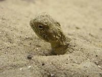

A deer
A herd's leader in a big Zoo of Rostov-on-Don, Russia.
The herd of deer walks close to the fence. Deer allow us to touch them. The deer like communicate with people. They take leaves that we bring to them. Visitors merely break off branches with leaves from nearest willow trees. Surprisingly these trees remain like jungle every year.

Desert lizard in Rostov's zoo
Rostov's zoo is one of the biggest at Russia's south. Many animals walk in spacious plots. Unfortunately tigers, lions and bears live in small cages. A white polar bear has got big home and a pool. There are many monkeys. Sometimes they bring new small human-like rostov citizens.
Moscow also has got a good zoo, but it is quite incapacious. The best zoological garden that I saw was in Vienna. It is also the oldest zoo in Europe and it is one of the best for comfortable animal life.